Префектура Канагава · Хаконэ, Гора · где остановиться
Fufu Хаконэ: горы напротив, два онсэна и ужин, который собираешь сам
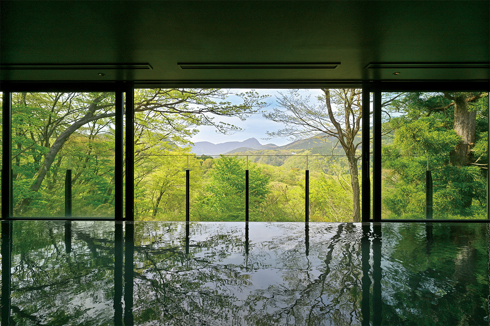
В январе 2022 года в Горе, одном из главных онсэнов Хаконэ, открылся «Fufu Хаконэ». Это «горный курорт» сети Fufu: все номера смотрят на вершины, вода в купальнях из двух разных источников, а основные блюда ужина гость выбирает сам.
Место
Горы, на которые смотришь с горы
Гора лежит на склоне горы Соунзан, в самой высокой части Хаконэ. Ещё в эпоху Мэйдзи здесь лежала широкая травяная равнина, а курорт начался, когда сюда провели горячую воду с Соунзана. Со временем Гора стала одним из главных онсэнов Хаконэ. От станции Синдзюку в Токио сюда чуть меньше двух с половиной часов на экспрессе «Романскар» компании Одакю, а затем по горной железной дороге Хаконэ до станции Гора.
Отель стоит на живописном участке, и сквозь долину из его окон видна вся внешняя гряда Хаконэ: гора Мёдзёгатакэ высотой около тысячи метров, пологий хребет Мёдзингатакэ и острая, как колпак, Кинтоки. Пишущая об отелях журналистка, приехавшая сюда в феврале 2022 года, видела хребты за голыми ветками и представляла, как весной склоны покроются молодой зеленью. В таком горном курорте, пишет она, главное то, что смену сезонов видно прямо из окна.
Происхождение названия Гора объясняют по-разному. Одни говорят, что по склону сошёл каменный поток из долины Соун-дзигоку и камни здесь лежали грудами. Другие считают, что слово пришло из санскрита и значит «каменный ад». Третьи вспоминают, что земля здесь твёрдая, как панцирь черепахи. Отель взял эту тему за основу: его знак соединяет узор черепашьего панциря, горы Хаконэ и японские деревья и выложен в технике ёсэги, традиционной мозаики Хаконэ из разных пород дерева.
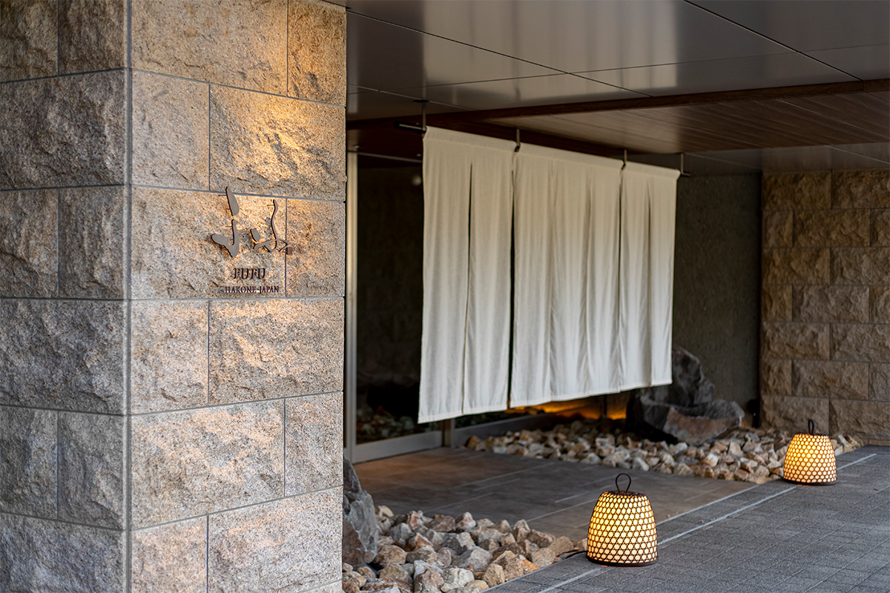
Камень
Валуны из Манадзуру
Камень здесь повсюду: стены напоминают скальный склон, из камня сделаны ручки ящиков и курильницы для ароматов. У главного входа стоит огромный валун хон-комацу-иси, который специально искали для этого места. Камень комацу-иси родился из лавы вулкана Хаконэ около 400 000 лет назад, и добывают его только в окрестностях городка Манадзуру. Его называют «восточным ёкодзуной» среди японских камней, наравне с «западным ёкодзуной», камнем адзи-иси. На стене у входа висит работа HOSOO, старого киотского дома ткачества нисидзин: цвет и рельеф ткани тоже напоминают скалу.
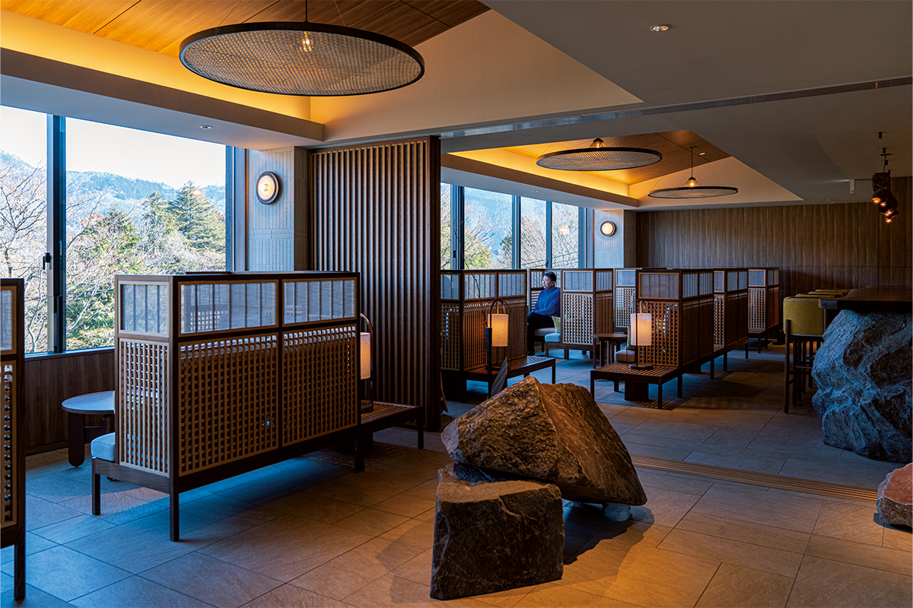
Гостей на лифте поднимают в лобби на третьем этаже, и первое, что видишь, это панорама гор в окне. В глубине лобби работает бар. Днём здесь смотрят на склоны, вечером пьют фирменный коктейль «Белая мимоза, аромат трав и цветов».
Номера
39 люксов с собственным онсэном
Корпуса поставлены по склону, и из всех 39 номеров видны горы. В воздухе пахнет японским деревом: из курильницы, вырезанной из камня комацу-иси, тянет хвоей. Самые большие номера категории Fufu Luxury Premium Suite площадью 120 квадратных метров, их всего три, по одному на верхнем этаже каждого корпуса: главного «Ямарури», первого «Кэяки-но ми» и второго «Нара-но мэ». С террасы такого номера видна вся панорама гряды, а если открыть окно в спальне, слышно птиц и ветер. Чтобы всё это успеть, автор советует остаться больше чем на одну ночь.
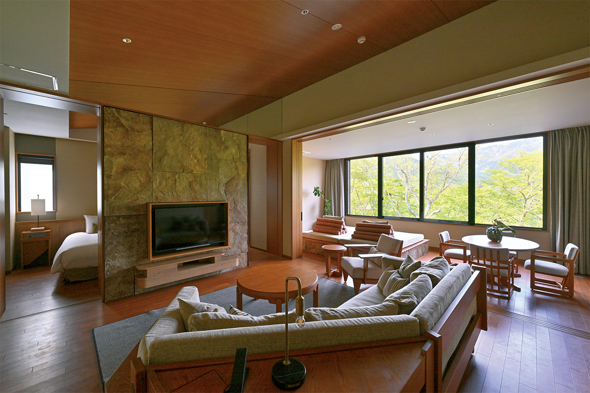
Онсэн
Два источника: сначала сера, потом соль
Главная особенность «Fufu Хаконэ» в том, что вода в большой купальне и в номерах разная. Большая купальня сделана на верхнем этаже, откуда горы видны лучше всего. В неё идёт вода источника Овакудани: кислая, сульфатная, с запахом серы, как и положено в Хаконэ. Особенно красиво здесь на рассвете, когда склоны краснеют под первым солнцем.
В номерах вода из источника Гора, прозрачная и мягкая, хлоридная. Соль остаётся на коже, сдерживает испарение пота и долго сохраняет влагу. Отсюда совет: сначала идти в большую купальню, где сернистая вода очищает кожу, а потом в свой номер, где вода её увлажняет. В номерной ванне вода всегда нужной температуры и при каждом погружении переливается через край.
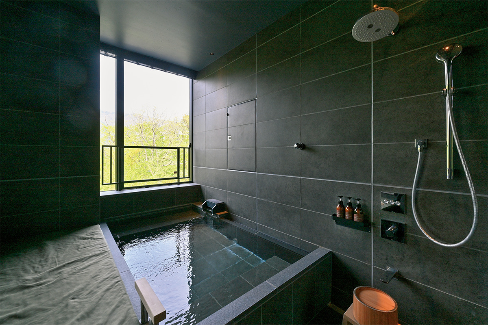
В спа HINOKA предлагают процедуры на основе старинной японской ферментации. Фирменная процедура «хакко онэцу мокуёку»: тело укладывают в кипарисовую стружку, которая сама нагревается при брожении.
Ужин
Основные блюда на выбор
Японский ресторан называется «Яма-но э». Ужин здесь кайсэки, но устроен он необычно для онсэна. Закуски, суп и сашими подают по порядку, а основные блюда, «сусумэ-дзакана», гость выбирает сам. В кайсэки так называют закуски, под которые хорошо идёт сакэ. В 2023 году в меню было около 16 таких блюд: рыба сезона, сезонные продукты в панировке из рисовых крекеров, фирменные харумаки, весенние роллы (в начале лета с уткой и фуа-гра), свинина с травами. К ним добавляются блюда из продуктов классом выше: морской ёж, морское ушко, говядина вагю. Выбрать можно три. Тем, кто не может решиться, предлагают меню от шеф-повара.
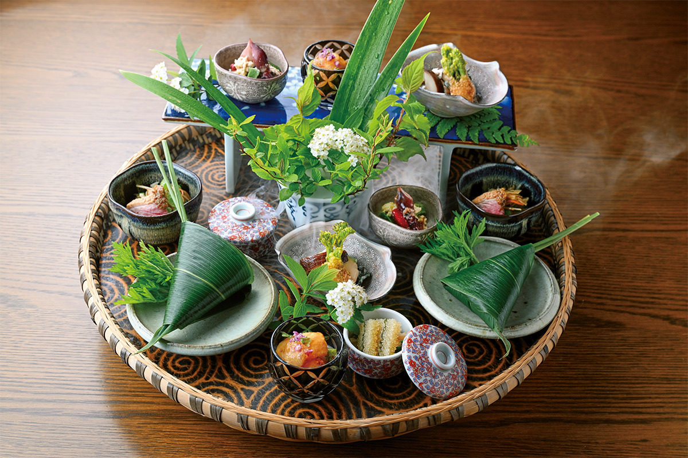
Посуду для ресторана делали на заказ, с камнем комацу-иси и древесиной японских пород. Сашими собирают в основном из рыбы ближних морей, понемногу из всего, что вкусно в этот сезон.
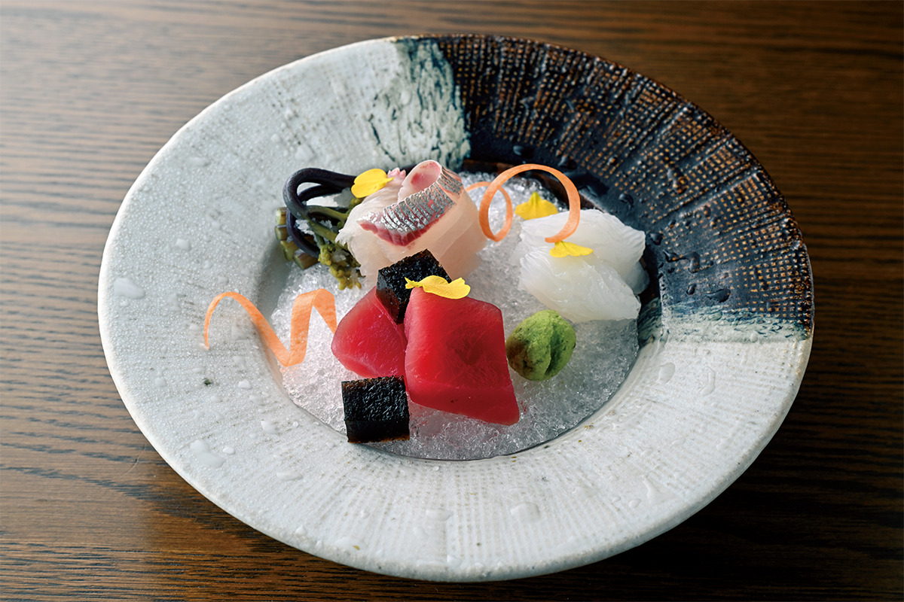
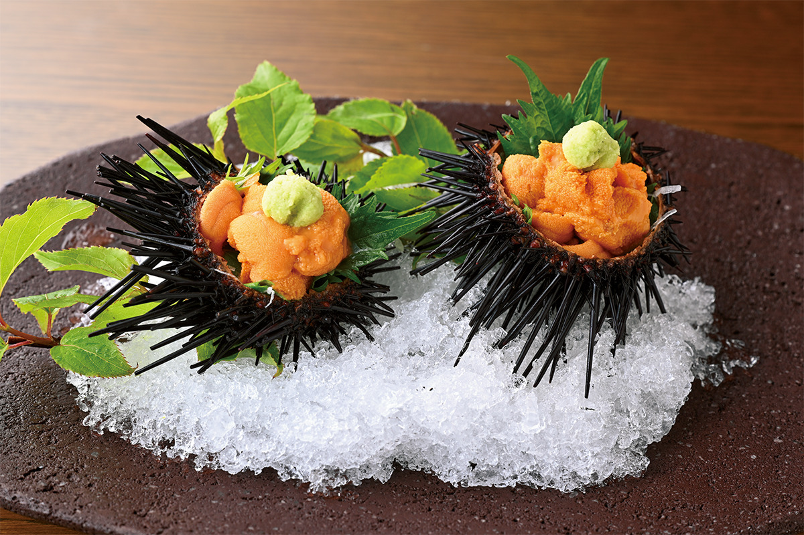
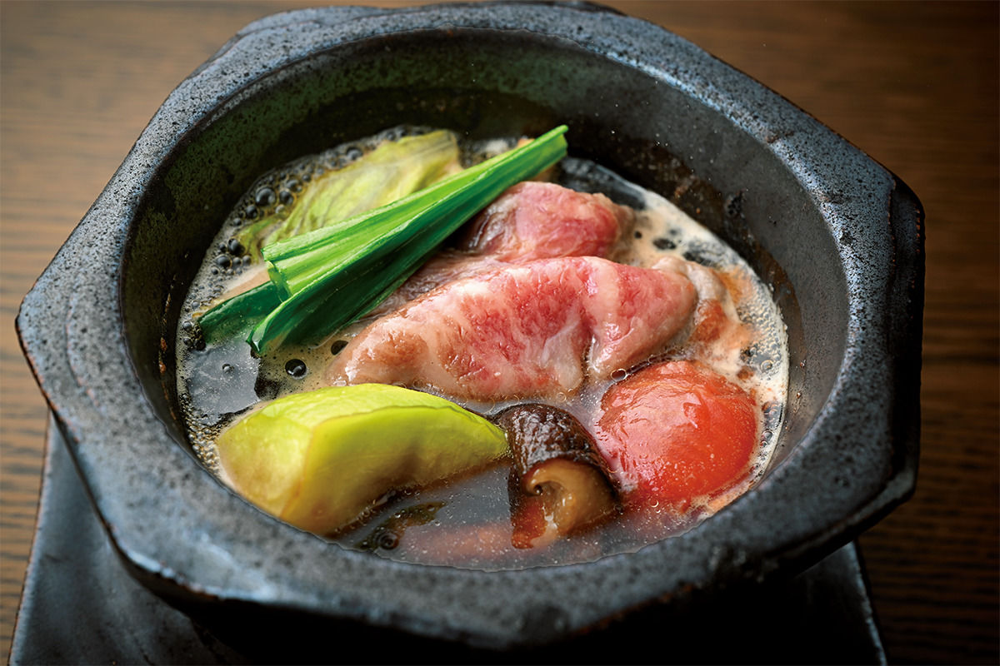
В ресторане есть и тэппанъяки «Исидзуэ». Повар жарит перед гостями говядину вагю, рёбрышки с дымком и лангуста. Эти блюда тоже можно взять в число трёх основных.
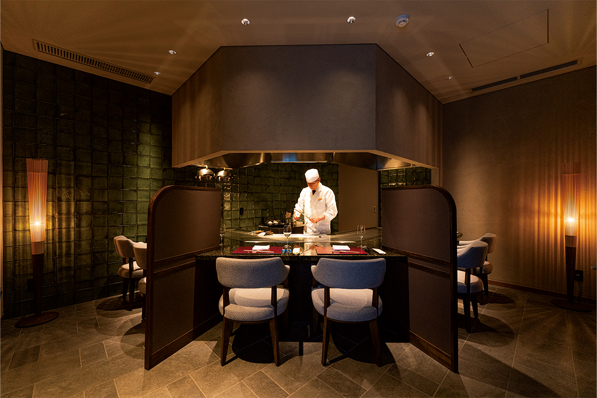
На завершение тоже есть выбор: тядзукэ, рис с чаем, гречневая лапша ручной работы или рис сезона, сваренный в котелке. Затем десерт. К ужину предлагают сочетания с вином и смешанные сочетания с натуральным вином и сакэ. В 2022 году четыре напитка в паре к блюдам стоили 8800 иен, три натуральных 5500 иен.
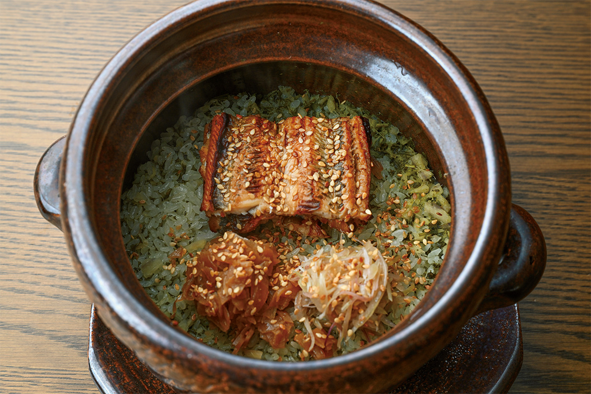
Завтрак
Много маленьких тарелок
Завтракают в том же ресторане «Яма-но э». Из-за столов видны горы, освещённые утренним солнцем. Завтрак японский: рис сорта коси-хикари из префектуры Ямагата, рыба на гриле, омлет даси-маки, тушёные овощи, отварная зелень в бульоне, соленья.
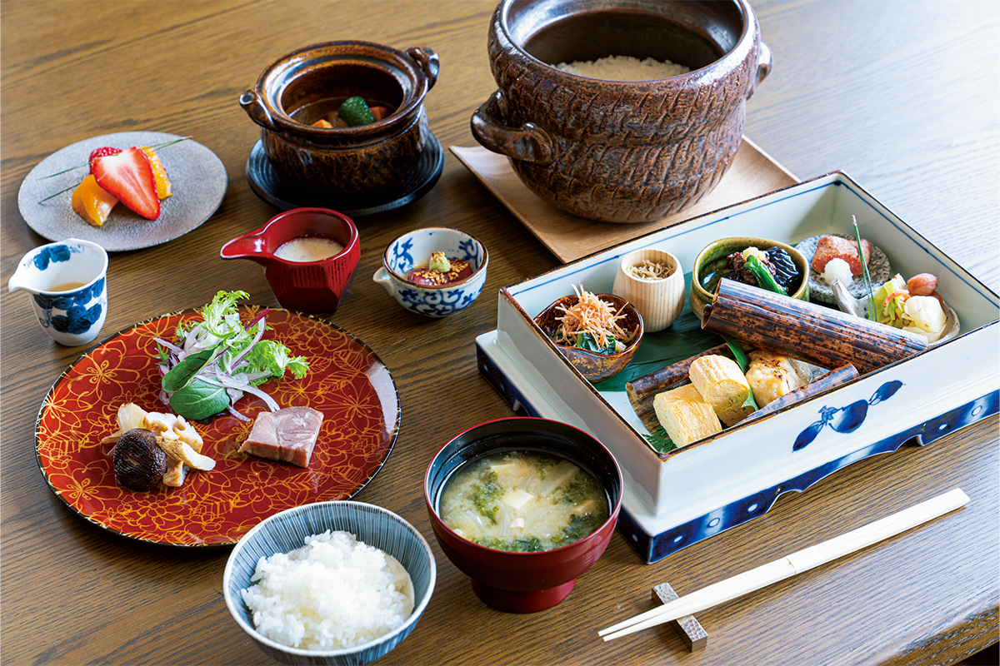
От «Fufu Хаконэ» около 15 минут на машине до рёкана «Суйсёэн», тоже известного своей кухней. Онсэны и стиль ужина там другие, поэтому две гостиницы можно совместить в одной поездке.
«Fufu Хаконэ»
- Адрес
- префектура Канагава, Хаконэ, Гора, 1320-807
- Телефон
- +81 570-0117-22
- Номера
- 39
- Цены / Вход
- от 82 500 иен за номер на двоих за ночь, с налогом и сервисом (2023)
- Заезд / выезд
- 15:00 / 11:00
- Как добраться
- от станции Гора горной железной дороги Хаконэ около 5 минут на трансфере отеля (по предварительной заявке); на машине около 30 минут от развязки Готэмба скоростной дороги Томэй
- Сайт
- fufuhakone.jp
Фото: Марико Тая, Хироси Абэ.